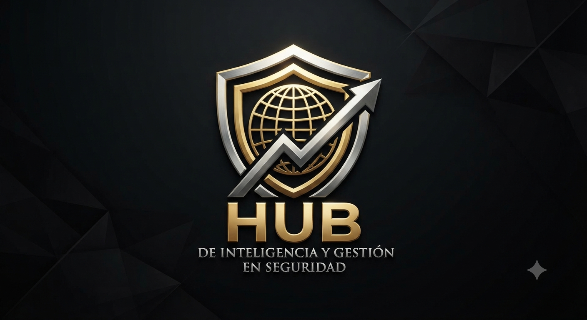

En el HUB de Inteligencia y Gestión en Seguridad, la asesoría no es un evento: es un proceso de acompañamiento continuo para la Alta Dirección. Mientras la consultoría diagnostica y resuelve un problema estratégico puntual, la asesoría sostiene el criterio en el día a día: gobernanza de seguridad, cumplimiento normativo y blindaje jurídico, financiero y operativo. Apoyamos y gestionamos tus procedimientos ante organismos acreditados —DC-3/STPS, CONOCER, C-TPAT y OEA ante el SAT— con pliegos técnicos marca-agnósticos (imparciales) y evidencia trazable. El HUB no certifica: nos aseguramos de que tú llegues a la certificación con certeza defendible. Porque la certeza no es un evento, es un proceso.
Blindaje jurídico, financiero y operativo para la Alta Dirección. La certeza no es un evento, es un proceso.
Gobernanza de seguridad continua con acceso permanente al criterio colectivo de las cuatro Direcciones del HUB. Eliminamos el riesgo de responsabilidad solidaria de la Alta Dirección mediante acompañamiento estratégico y blindaje jurídico, financiero y operativo disponible cuando se necesita.
Diseño de protocolos de crisis, árboles de decisión y simulacros de gabinete. Evitamos la parálisis ante incidentes críticos: su organización responde con método, roles definidos y evidencia cuando el tiempo y la reputación están en juego.
Auditoría continua de terceros sobre la función de seguridad interna. Detectamos y corregimos desviaciones operativas recurrentes antes de que se conviertan en pérdida financiera, pasivo contingente o exposición legal.
Dashboard de KPIs de seguridad y comités mensuales de riesgo con Dirección General. Sustituimos los reportes cosméticos por indicadores verificables que sostienen decisiones de Consejo con evidencia trazable y defendible.